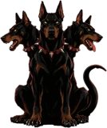

O palácio dos deuses
No alto do Olimpo, Hefesto construiu uma casa para cada deus. Eles se reúnem na sala de Zeus, onde comem ambrosia e bebem néctar.
Homero, Ilíada, canto I LUGAR
LUGAR
Ὄλυμπος
A montanha mais alta da Grécia, com 2.918 metros, entre a Tessália e a Macedônia. Para os gregos, era no alto dela, acima das nuvens, que moravam Zeus e os outros deuses.
Que nota você dá? Clique nos cerberinhos:

Eu moro no ponto mais baixo do mundo; eles, no mais alto. Hesíodo diz que uma bigorna de bronze levaria nove dias caindo do céu até a terra, e mais nove da terra até o Tártaro.
No alto do Olimpo, Hefesto construiu uma casa para cada deus. Eles se reúnem na sala de Zeus, onde comem ambrosia e bebem néctar.
Homero, Ilíada, canto IPor dez anos, Zeus e seus irmãos lutaram a partir do Olimpo contra os Titãs, que ficavam no monte Ótris. A vitória deu aos olimpianos o governo do mundo.
Hesíodo, TeogoniaDois irmãos gigantes quiseram alcançar o céu empilhando montanhas: o Ossa sobre o Olimpo e o Pélion sobre o Ossa. Apolo os matou antes que crescessem.
Homero, Odisseia, canto XI“Dizem que ali fica a morada eterna dos deuses: não é sacudida por ventos, nem molhada por chuvas, nem a neve chega perto.”
Homero, Odisseia, canto VI (tradução livre)